教案、工作紙、遊戲、評估建構器、Workspace 差異化與 AI 回饋
示範：澳門初中數學「畢氏定理」
2026年10月 · 繁體中文（澳門／香港用語） · 官方網站 www.eduaide.ai
澳門科學館 Oscar 製作
← → 鍵、畫面下方按鈕或左右滑動翻頁；點擊任何截圖可放大
澳門科學館 Oscar 製作 · 2026年10月
點擊標題跳轉；右上角 ☰ 亦可隨時開啟目錄。
澳門科學館 Oscar 製作 · 2026年10月
| 標記 | 意思 |
|---|---|
| 免費可用 | Free 帳戶可用，不扣點數，或官方沒有說明要扣點數（會註明「未確認」） |
| 免費有限制 | Free 帳戶可用，但受限制：每月 24 generation credits（一份 lesson／unit plan 扣 3 點，一次 evaluation 扣 2 點；其他資源扣幾點官方未公布）；輸入長度、標準及上載文件數目較少 |
| Pro 付費 | 只限 Pro（US$5.99／月 或 US$49.99／年） |
| 虛線字 | 教育術語或介面字眼；滑鼠懸停或輕按即顯示中文及解釋，每頁底部的「名詞」方塊亦列出全部 |
| ⚠ 教師要檢查 | AI 輸出中發現的錯誤及正確答案 |
| ⛔ 功能限制 | 實測發現的功能限制及變通方法 |
提示：點擊任何截圖可放大；按 Esc 或點擊畫面即可關閉。
澳門科學館 Oscar 製作 · 2026年10月
1. 打開官方網站 https://www.eduaide.ai/，按右上角登入；或直接打開登入頁 eduaide.ai/auth/signin。
2. 按 Continue with Google，選擇你的 Google 帳戶。首次登入即自動建立 Free 帳戶（不需要信用卡）。
3. 登入後網址變成 eduaide.ai/app/dashboard，首次會彈出 Best Practices 視窗（下一頁）。
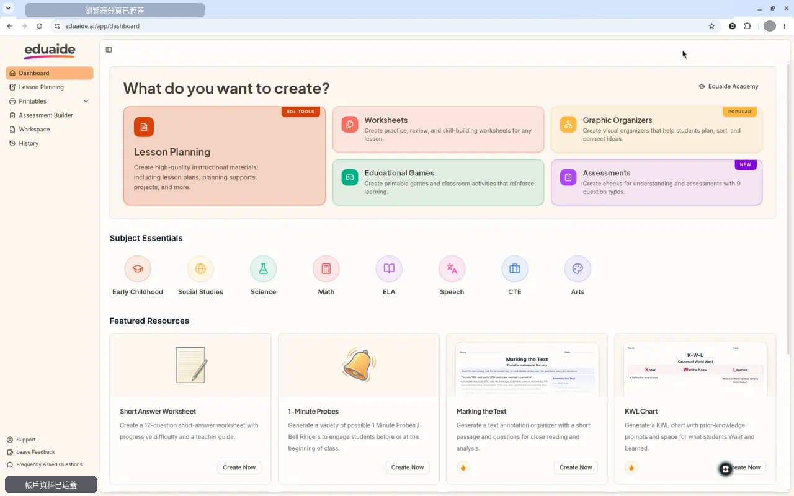
澳門科學館 Oscar 製作 · 2026年10月
首次進入時會彈出 Best Practices for Using Eduaide。內容翻譯如下，按 Agree and Continue 繼續：
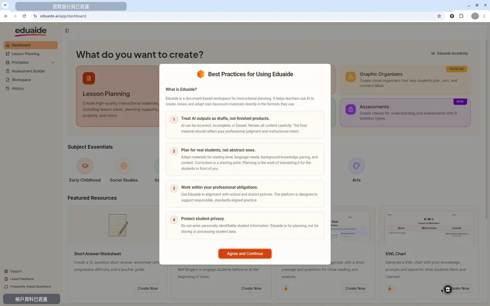
| 原文 | 中文翻譯 |
|---|---|
| What is Eduaide? … a document-based workspace for instructional planning. | Eduaide 是以文件為本的備課工作空間，協助教師用 AI 直接製作、修訂及調適真實課堂材料。 |
| 1. Treat AI outputs as drafts, not finished products. | 把 AI 輸出當作草稿，不是成品。AI 可能不正確、不完整或有偏見，請仔細審閱。 |
| 2. Plan for real students, not abstract ones. | 為真實的學生備課：按閱讀程度、語言需要、背景知識、進度調整。 |
| 3. Work within your professional obligations. | 遵守學校及教育當局的政策和專業責任。 |
| 4. Protect student privacy. | 保護學生私隱：不要輸入可識別學生身份的資料；Eduaide 用於備課，不是儲存或處理學生資料。 |
澳門科學館 Oscar 製作 · 2026年10月
Dashboard 標題是 What do you want to create?。左側欄：Dashboard · Lesson Planning · Printables（Worksheets／Organizers／Games）· Assessment Builder · Workspace · History；底部有 Support · Leave Feedback · FAQ · 用戶選單（Settings 等）。
| 區域 | 內容 |
|---|---|
| 五張大卡 | Lesson Planning（80+ TOOLS）、Worksheets、Graphic Organizers（POPULAR）、Educational Games、Assessments（NEW，9 種題型） |
| Subject Essentials | Early Childhood、Social Studies、Science、Math、ELA、Speech、CTE、Arts |
| Featured Resources | Short Answer Worksheet、1-Minute Probes、Marking the Text、KWL Chart、Bingo、Socratic Seminar、Jeopardy Style、Quiz Quiz Trade；底部 View All Resources |
| 右上角 | Eduaide Academy（官方課程） |
澳門科學館 Oscar 製作 · 2026年10月
官方收費頁：eduaide.ai/pricing（2026年10月7日讀取）。
| 項目 | Eduaide Free | Eduaide Pro | Schools & Districts |
|---|---|---|---|
| 價錢 | US$0，不需信用卡 | US$5.99／月，或 US$49.99／年（約 US$4.17／月，「save 30%」）；部分地區結帳價可能不同 | 需查詢報價 |
| 生成次數 | 每月 24 generation credits（月初重置）：lesson／unit plan 3 點（即最多 8 份）、evaluation 2 點；其他資源扣幾點官方未公布 | 無限（No Monthly Generation Limit） | 按 Pro |
| 輸入內容 | 「Limited input context」：Topic 較短；可用 Standards 及上載文件，但確實數目未公布 | Topic 長度 3 倍、5 個 Standards、3 份上載文件 | — |
| 教案、工作紙、組織圖、遊戲、Assessment Builder | 免費有限制 | ✔ | ✔ |
| Evaluate 評估器 | 免費有限制每次 2 點；不能一鍵套用修訂 | ✔ 並可一鍵建立修訂版本 | — |
| Erasmus（Revise）、Differentiate 面板（含 Translate）、AI 圖片、YouTube 字幕稿、Reasoning 模型 | Pro 付費 | ✔ | — |
| 匯出 | Word、Google Docs、PDF（FAQ） | 同上 | — |
| 學校專屬 | — | — | 批量折扣、教師培訓、優先支援、啟用支援 |
澳門科學館 Oscar 製作 · 2026年10月
左下角用戶選單 › Settings（網址 /app/settings）。分頁：Profile · Preferences · Subscription · Integrations · Privacy · Badge。
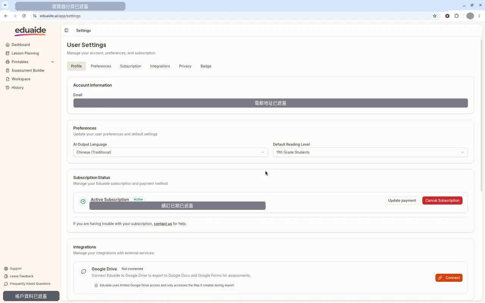
| 設定 | 說明 |
|---|---|
| AI Output Language | 本示範設為 Chinese (Traditional)，所有生成結果直接用繁體中文。這是唯一控制輸出語言的地方，表單內沒有語言選項。 |
| Default Reading Level | 新表單預設的年級（截圖為 11th Grade Students）；每次生成前仍可在表單改，本示範改為 8th Grade。 |
| Subscription | 顯示 Active Subscription（Pro）、Update payment、Cancel Subscription（續訂日期已遮蓋）。 |
| Integrations | Google Drive：Not connected（本示範沒有連接）。 |
| Privacy／Badge | 使用分析開關；下載 Educator Badge。 |
| Delete Account | 有生效中的 Pro 訂閱時不能自行刪除帳戶；刪除後有 7 天寬限期。 |
澳門科學館 Oscar 製作 · 2026年10月
依據：第56/2017號社會文化司司長批示附件七〈初中教育階段數學基本學力要求〉，《澳門特別行政區公報》第一組第26期副刊（2017-06-26）。學習範疇B：圖形與空間 › 學習組別B——2：三角形（逐字照錄）：
| 編號 | 原文 |
|---|---|
| B——2——9 | 掌握直角三角形的性質：直角三角形的兩個銳角互餘。知道有兩個角互餘的三角形是直角三角形； |
| B——2——11 | 掌握畢氏定理及畢氏定理的逆定理； |
| B——2——12 | 能運用畢氏定理及其逆定理進行計算和證明，並能運用它們解決一些簡單的實際問題； |
| A——1——6 | 瞭解平方根、算術平方根、立方根的意義，能用根號表示一個數的平方根、算術平方根和立方根； |
| A——1——7 | 瞭解開方與乘方互為逆運算，會用平方運算求某些非負數的平方根，會用立方運算求某些數的立方根；會用計算器求一個數的平方根和立方根； |
| D——1——3 | 面對實際情境，嘗試發現和提出數學問題，並用數學的方式進行分析和解決問題； |
| D——1——4 | 通過實際問題的解決，體會數學的價值，提高數學學習的興趣； |
編號說明（原文）：「大寫英文字母代表不同學習範疇的基本學力要求， A——“數與代數”，B——“圖形與空間”，C——“統計與概率”，D——“情感、態度價值觀”」。A——1——6／7 是先備要求；D——1——3／4 是情意要求。
《公報》：bo.dsaj.gov.mo（第56/2017號批示） ｜ 附件七 PDF：despsasc-56-2017-anexo_vii.pdf ｜ 教青局：基本學力要求 ｜ 初中數學檢視表
澳門科學館 Oscar 製作 · 2026年10月
以下是本教程貼入 Eduaide 的文字（全部自撰；數字已驗算）。完整檔案可在「下載」頁取得。
學生能運用畢氏定理及其逆定理，計算直角三角形的未知邊、判斷三角形是否直角三角形，並解決簡單的實際問題。
澳門《初中教育階段數學基本學力要求》（第56/2017號社會文化司司長批示 附件七）相關條文： 學習範疇B：圖形與空間 學習組別B——2：三角形 B——2——11 掌握畢氏定理及畢氏定理的逆定理； B——2——12 能運用畢氏定理及其逆定理進行計算和證明，並能運用它們解決一些簡單的實際問題； 相關先備要求： A——1——6 瞭解平方根、算術平方根、立方根的意義，能用根號表示一個數的平方根、算術平方根和立方根； A——1——7 瞭解開方與乘方互為逆運算，會用平方運算求某些非負數的平方根，會用立方運算求某些數的立方根；會用計算器求一個數的平方根和立方根； 來源：https://bo.dsaj.gov.mo/bo/i/2017/26/despsasc_cn.asp Macao junior secondary mathematics "Requirements of Basic Academic Attainments" (Despacho n.º 56/2017, Annex VII), relevant items (English summary, not an official translation): B-2-11: Master the Pythagorean theorem and its converse. B-2-12: Use the Pythagorean theorem and its converse for calculation and proof, and use them to solve simple real-world problems. A-1-6 / A-1-7 (prerequisites): square roots and arithmetic square roots; using a calculator to find square roots.
畢氏定理 在直角三角形中，直角所對的邊叫做斜邊，它一定是最長的邊；另外兩條邊叫做直角邊。 畢氏定理：如果直角三角形的兩條直角邊是 a 和 b，斜邊是 c，那麼 a² + b² = c²。 例一（求斜邊）：兩條直角邊分別是 3 cm 和 4 cm。c² = 3² + 4² = 9 + 16 = 25，所以 c = √25 = 5 cm。 例二（求直角邊）：一把 5 m 長的梯子斜靠在牆上，梯腳離牆 1.4 m。梯子是斜邊，所以要用減法：h² = 5² − 1.4² = 25 − 1.96 = 23.04，h = √23.04 = 4.8 m。 逆定理：如果三角形的三邊滿足 a² + b² = c²（c 是最長邊），那麼這個三角形是直角三角形。例如 9² + 12² = 81 + 144 = 225 = 15²，所以三邊為 9、12、15 的三角形是直角三角形；但 6² + 7² = 85，不等於 9² = 81，所以三邊為 6、7、9 的三角形不是直角三角形。 生活應用：想檢查一個角是不是直角，可以在一邊量 3 m、另一邊量 4 m，如果兩個記號剛好相距 5 m，那個角就是直角。 記得檢查答案：斜邊一定是最長的邊，直角邊不可能比斜邊長。
題目：一把 5 m 長的梯子斜靠在垂直的牆上，梯腳離牆 1.4 m。梯頂離地面有多高？ 學生答案： 設梯頂高度為 h。 h² = 5² + 1.4² h² = 25 + 1.96 = 26.96 h = √26.96 ≈ 5.19 所以梯頂離地 5.19 m。
澳門科學館 Oscar 製作 · 2026年10月
左側欄 Lesson Planning（/app/lesson-planning）。工具卡按 8 個類別排列，卡上有 FEATURED 標記及收藏星號。
| # | 類別（介面名稱） | 中文 | 工具數 |
|---|---|---|---|
| 1 | Lesson & Unit Plans | 教案及單元計劃 | 11 |
| 2 | Planning Supports | 規劃支援 | 11 |
| 3 | Direct Instruction | 直接教學 | 7 |
| 4 | Assignments & Projects | 作業及專題 | 15 |
| 5 | Discussion & Collaboration | 討論及協作 | 13 |
| 6 | Questions | 題目 | 13 |
| 7 | Rubrics & Progress Reporting | 評分量表及進度報告 | 5 |
| 8 | Communication & Classroom Culture | 溝通及班級文化 | 14 |
| 合計 | 89 |
澳門科學館 Oscar 製作 · 2026年10月
Lesson Planning 及 Printables 頁頂部有三個工具：
?tab=favorites）。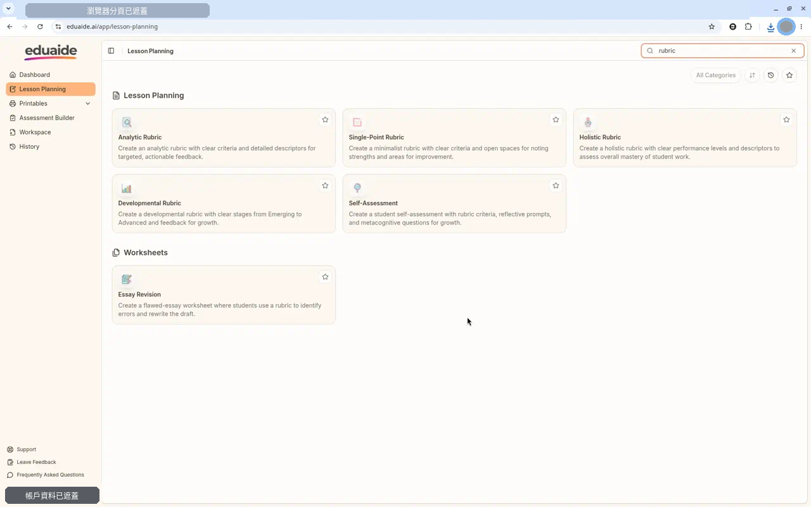
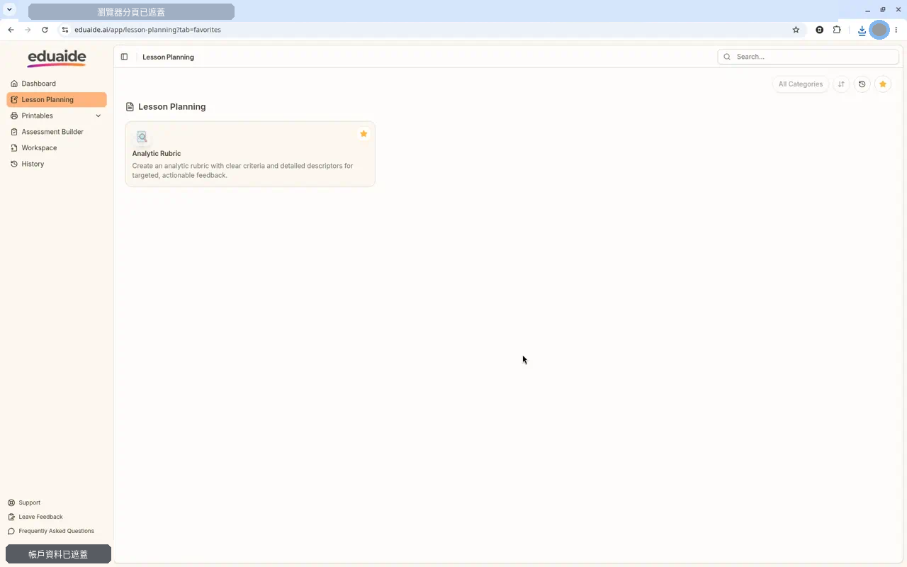
澳門科學館 Oscar 製作 · 2026年10月
每個工具都用同一款 Finalization form（例：5 E's Lesson Plan，/app/generator/lesson-planning/82）。
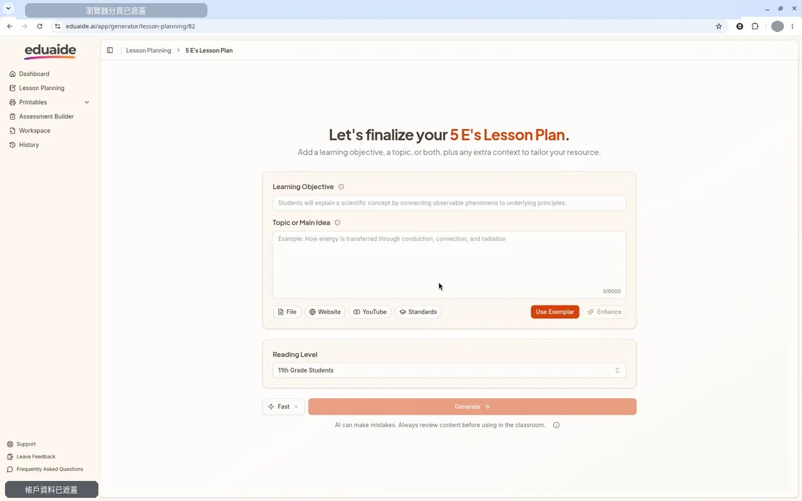
| 欄位／按鈕 | 中文 | 說明 |
|---|---|---|
| Learning Objective | 學習目標 | 學生上完課做得到甚麼 |
| Topic or Main Idea | 課題或主旨 | 教學內容；Pro 上限 6000 字元，Free 較短（確實上限未公布） |
| File / Website / YouTube / Standards | 檔案／網址／影片／標準 | Supplementary context；YouTube 字幕稿屬 Pro；Pro 最多 3 份文件、5 個標準 |
| Use Exemplar | 使用範例 | 載入官方示範內容 |
| Enhance | 優化 | 用 AI 改寫目標及課題（見專頁，要小心） |
| Reading Level | 閱讀程度 | 美國年級；本示範選 8th Grade |
| Fast / Reasoning | 快速／推理模型 | Reasoning 屬 Pro |
| Generate | 生成 | 底部提示「AI can make mistakes. Always review content before using in the classroom.」 |
澳門科學館 Oscar 製作 · 2026年10月
Lesson Planning › Lesson & Unit Plans › 5 E's Lesson Plan。把 p02 貼入 Learning Objective、p05 貼入 Topic（164 字元）。
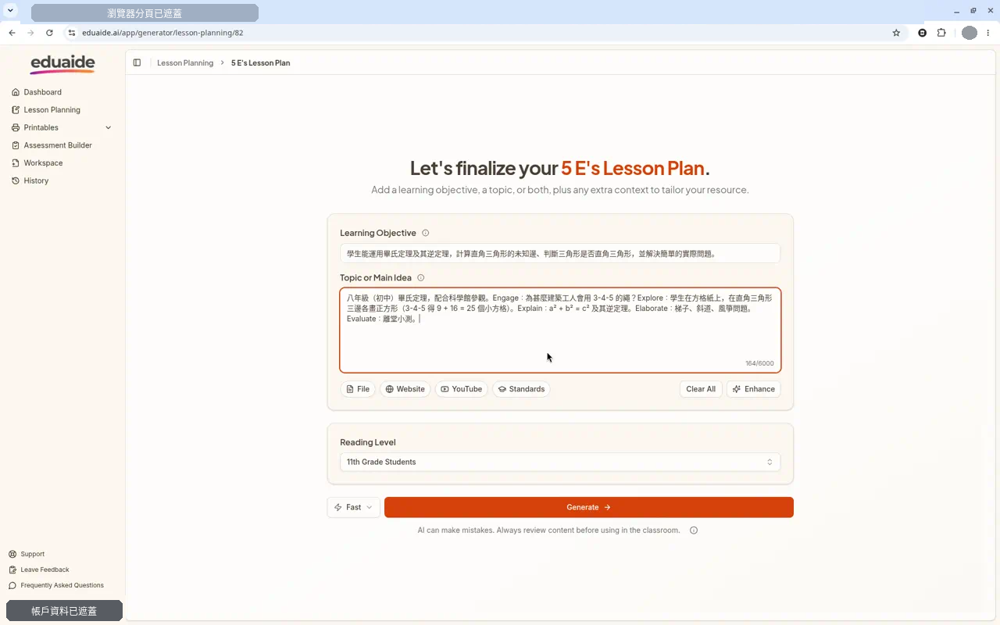
八年級（初中）畢氏定理，配合科學館參觀。Engage：為甚麼建築工人會用 3-4-5 的繩？Explore：學生在方格紙上，在直角三角形三邊各畫正方形（3-4-5 得 9 + 16 = 25 個小方格）。Explain：a² + b² = c² 及其逆定理。Elaborate：梯子、斜道、風箏問題。Evaluate：離堂小測。
澳門科學館 Oscar 製作 · 2026年10月
Topic 下方的按鈕用來加入 Supplementary context。本示範按 File 上載 macau_BAA_pythagoras_excerpt.docx（澳門要求原文），表單顯示「Files 1/3」。
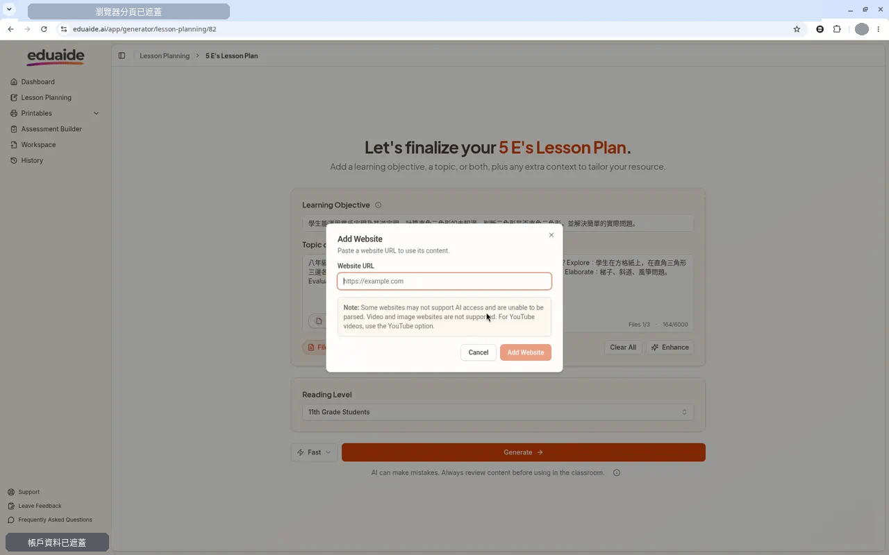
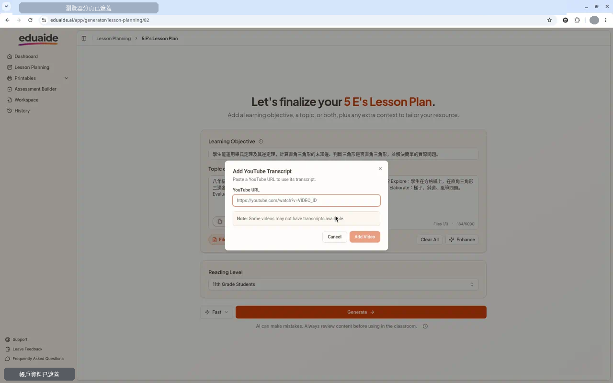
| 來源 | 方案 | 說明 |
|---|---|---|
| File（PDF、Word 等） | 免費有限制Free 份數較少，確實數目未公布 | Pro 最多 3 份；第三方資料提過 3MB 上限（未經官方確認） |
| Website | 免費有限制 | 讓 AI 讀取網頁內容 |
| YouTube | Pro 付費 | 讀取影片 transcript（字幕稿）；影片要有字幕 |
澳門科學館 Oscar 製作 · 2026年10月
按 Standards 開啟 Standards Browser：Jurisdiction（地區）› Framework（框架）› Grade（年級）→ 勾選，最多 5 項。
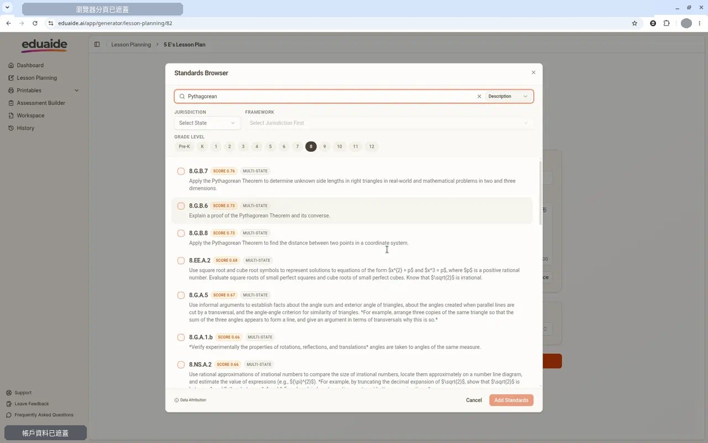
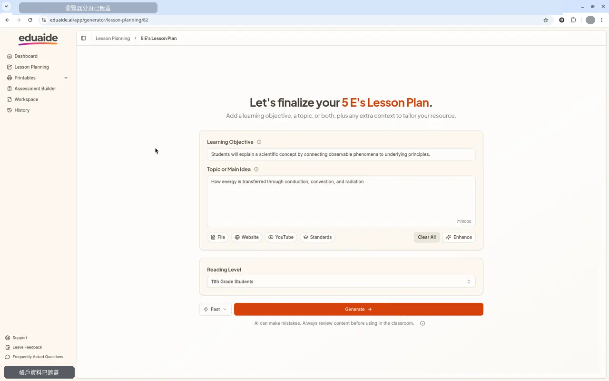
澳門科學館 Oscar 製作 · 2026年10月
Enhance（滑鼠提示「Refine objective and topic with AI」）會用 AI 改寫 Learning Objective 及 Topic，約 4 秒完成。完成後出現 Use This（採用）、↻（再改寫）及 ↶（復原）。
目標：學生能運用畢氏定理及其逆定理，計算直角三角形的未知邊、判斷三角形是否直角三角形，並解決簡單的實際問題。
課題：八年級（初中）畢氏定理，配合科學館參觀。Engage：為甚麼建築工人會用 3-4-5 的繩？Explore：學生在方格紙上，在直角三角形三邊各畫正方形（3-4-5 得 9 + 16 = 25 個小方格）。Explain：a² + b² = c² 及其逆定理。Elaborate：梯子、斜道、風箏問題。Evaluate：離堂小測。
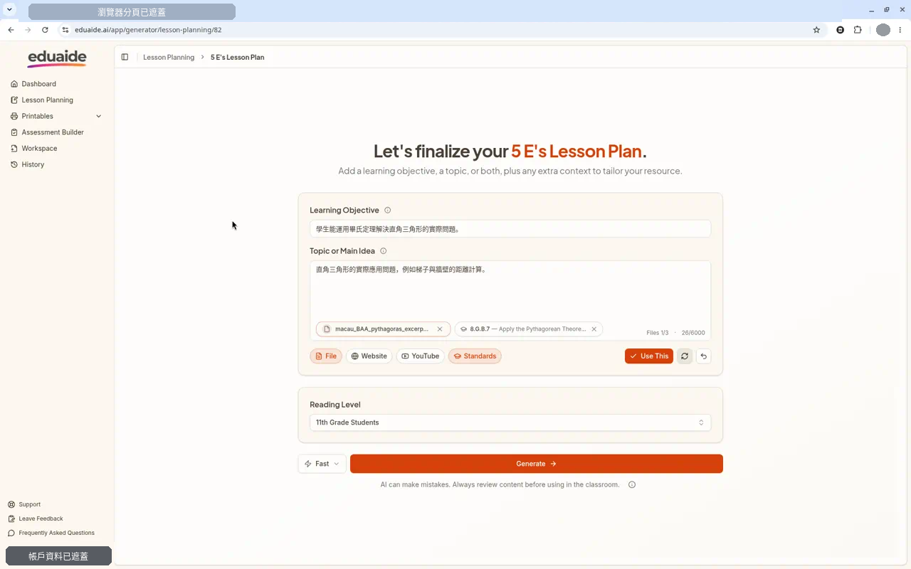
目標：學生能運用畢氏定理解決直角三角形的實際問題。
課題：直角三角形的實際應用問題，例如梯子與牆壁的距離計算。
被刪走的內容：畢氏定理逆定理、5E 五步大綱、3-4-5 繩、方格紙正方形活動、科學館參觀、澳門情境。
對生成教案的影響（Fast）：變成一般的「梯子」教案：沒有 a² + b² = c²、沒有 3-4-5、沒有逆定理；用語亦有問題（「直邊」、「梯子的高度」，「無需安全注意事項」重複出現）。
建議：按 Use This 前逐句比較；如刪走重點，按 ↶ 復原或乾脆不用 Enhance。對照沒有 Enhance 的 Reasoning 版本（後面兩頁）。
澳門科學館 Oscar 製作 · 2026年10月
表單底部 Generate 左邊的下拉選單選模型：Fast（較快）或 Reasoning（官方說「handling structure and complexity more carefully」）。
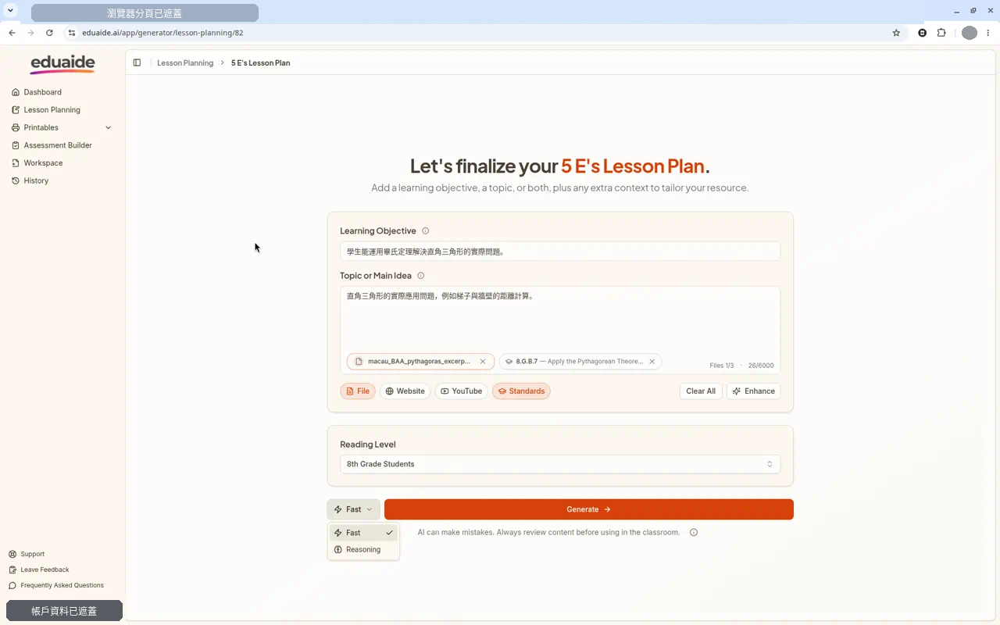
| 比較項目 | Fast | Reasoning（Pro） |
|---|---|---|
| 生成時間（5E 教案） | 約 17 秒 | 約 29 秒 |
| 本次輸入 | Enhance 後的短目標及課題＋檔案＋8.G.B.7 | 原本 164 字元課題（沒有 Enhance）＋澳門要求 .docx |
| 結果標題 | 5E 教學序列計劃：畢氏定理的實際應用 | 5E學習序列：畢氏定理與逆定理（八年級，2–3 天） |
| 內容 | 一般梯子教案；沒有公式、3-4-5、逆定理 | 跟足我們的大綱：a² + b² = c²、3-4-5、逆定理、5-12-13、6-8-10、科學館；有表格、評分量表及示例 |
| 錯誤 | 用語不當、重複句（見下頁） | 繩長寫錯、標題天數不符（見下頁）；沒有提澳門 |
| 長度 | 約 5,600 字元 | 約 14,900 字元 |
澳門科學館 Oscar 製作 · 2026年10月
生成後自動在 Workspace 開啟（分頁標題：畢氏定理實際應用教案）。
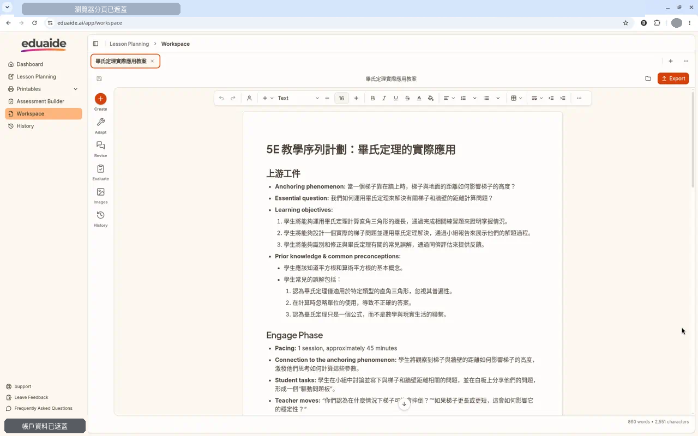
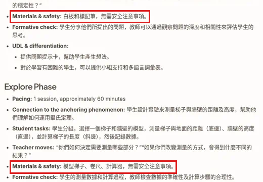
AI 輸出節錄（未經修改）Anchoring phenomenon: 當一個梯子靠在牆上時，梯子與地面的距離如何影響梯子的高度？
Student tasks: 學生分組……測量梯子與地面的距離（底邊）、牆壁的高度（直邊），並計算梯子的長度（斜邊）……
Materials & safety: 白板和標記筆，無需安全注意事項。
澳門科學館 Oscar 製作 · 2026年10月
同一工具，Topic 用原本 164 字元大綱，附上澳門要求 .docx，模型選 Reasoning（約 29 秒）。
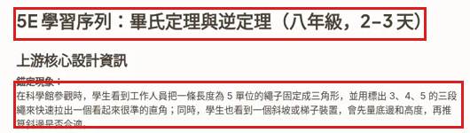
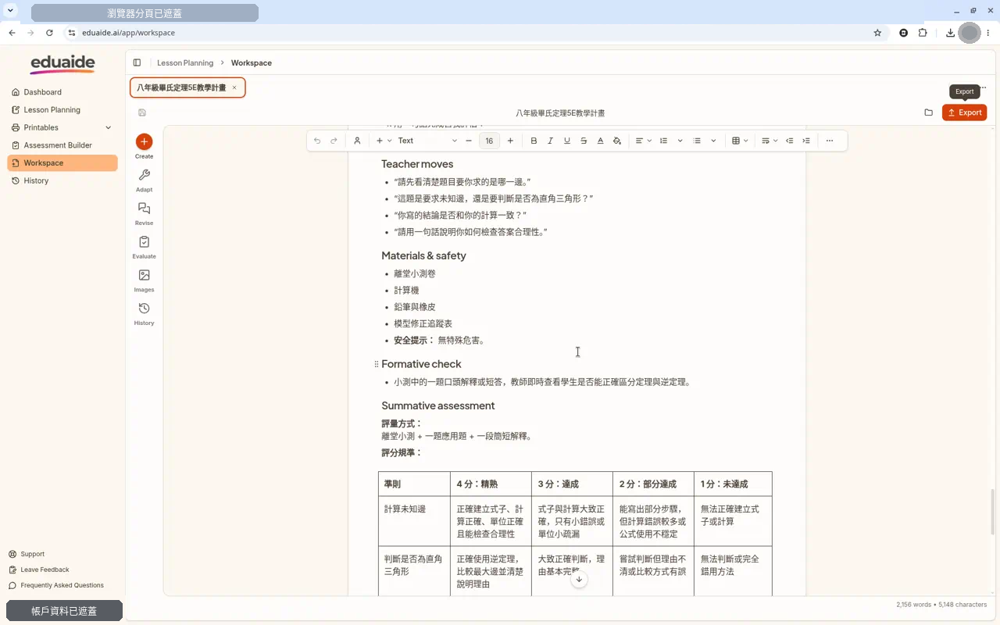
AI 輸出節錄（未經修改）# 5E學習序列：畢氏定理與逆定理（八年級，2–3 天）
在科學館參觀時，學生看到工作人員把一條長度為 5 單位的繩子固定成三角形，並用標出 3、4、5 的三段繩來快速拉出一個看起來很準的直角……
澳門科學館 Oscar 製作 · 2026年10月
Lesson Planning › Planning Supports › Learning Objective + Success Criteria（約 9 秒）。輸出：學習目標、4 項成功標準、4 項評估措施（按 Marzano 分類）。
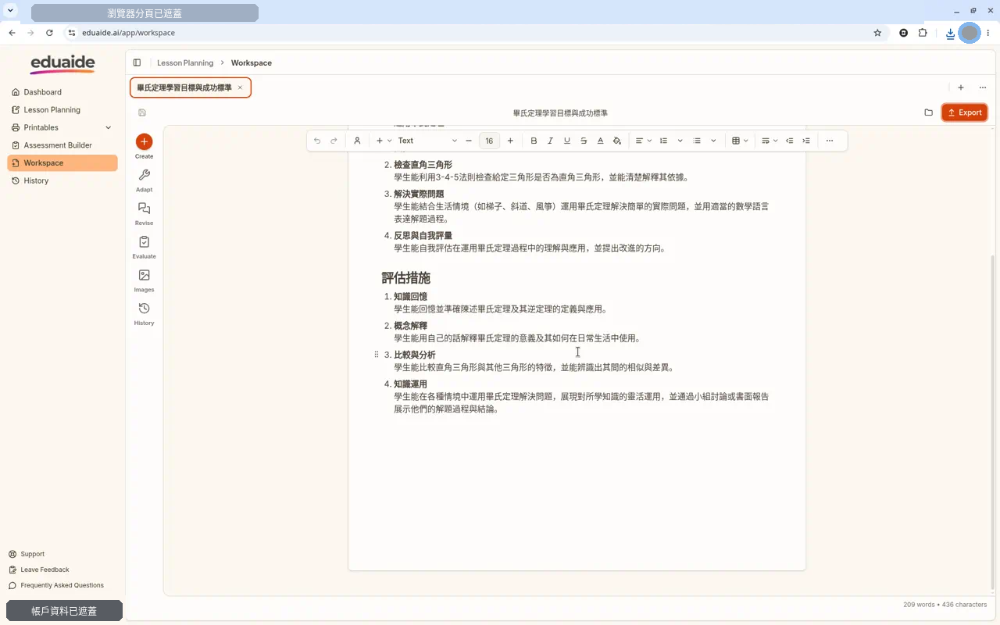
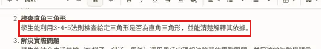
AI 輸出節錄（未經修改）2. 檢查直角三角形：學生能利用3-4-5法則檢查給定三角形是否為直角三角形，並能清楚解釋其依據。
澳門科學館 Oscar 製作 · 2026年10月
Direct Instruction › Worked Example（約 25 秒），Topic 用 p06。數字全部正確：6、8 → 10；17、8 → 15；7-24-25 是直角三角形。
畢氏定理解題示例：(1) 兩條直角邊 6 cm 和 8 cm，求斜邊（10 cm）；(2) 斜邊 17 cm、一條直角邊 8 cm，求另一條直角邊（15 cm）；(3) 三邊 7、24、25 的三角形是不是直角三角形？（是，49 + 576 = 625）。重點：求斜邊用加，求直角邊用減。
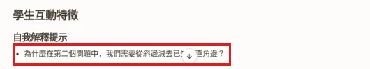
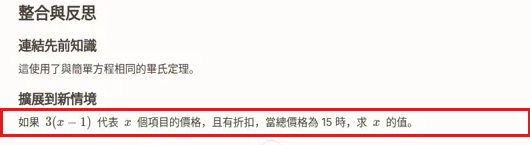
澳門科學館 Oscar 製作 · 2026年10月
Questions › Multiple Choice Questions（約 9 秒）。我們在 Topic 要求誘答選項針對四種誤解（p08）。
畢氏定理及其逆定理。誘答選項要針對常見誤解：求直角邊時把平方相加、忘記開方、把不是斜邊的邊當作 c、以為 6、7、9 是直角三角形。
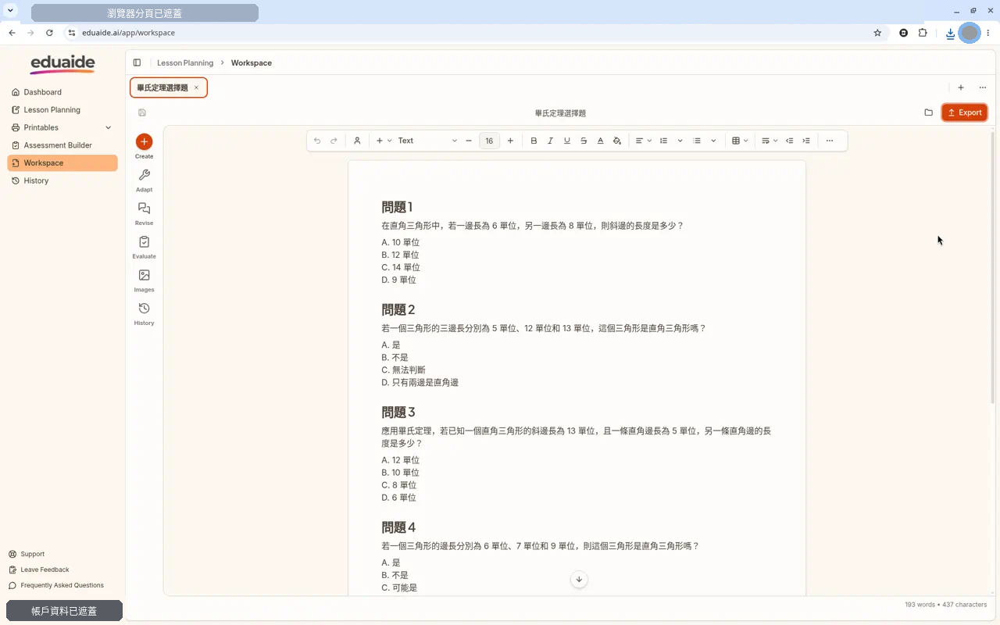
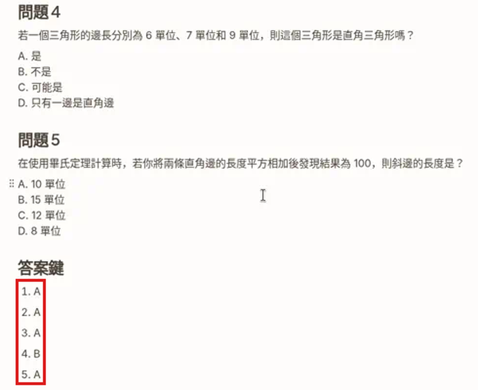
澳門科學館 Oscar 製作 · 2026年10月
Questions › Exit Slip（約 16.5 秒），Topic 用 p22，要求三題：求斜邊（5、12）、求直角邊（13、5）、逆定理（6、7、9）。
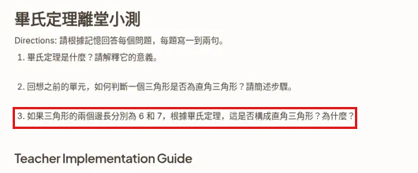
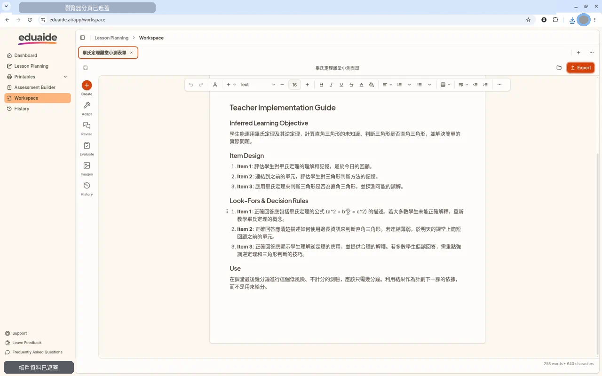
澳門科學館 Oscar 製作 · 2026年10月
Assignments & Projects › Choice Board Assignments（約 15 秒）。輸出是 8 項任務的表格。
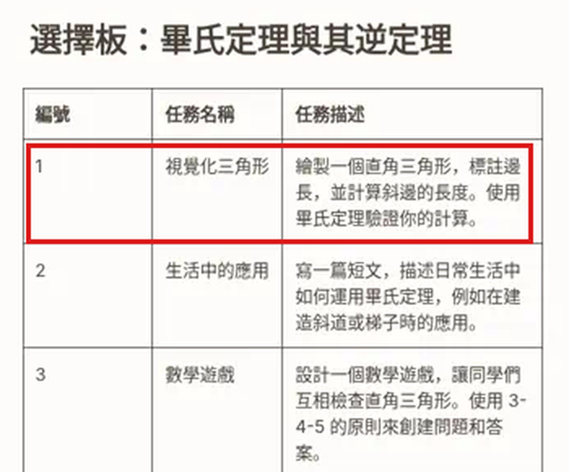
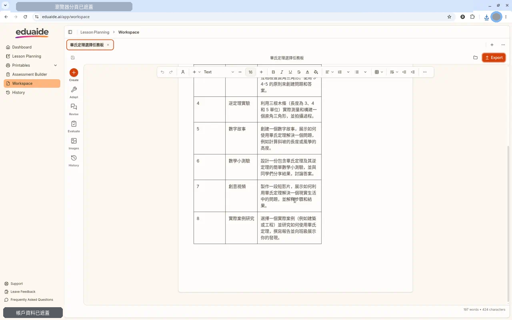
澳門科學館 Oscar 製作 · 2026年10月
Discussion & Collaboration › Jigsaw Activity（約 12 秒）。輸出 4 個專家組子題及引導問題。
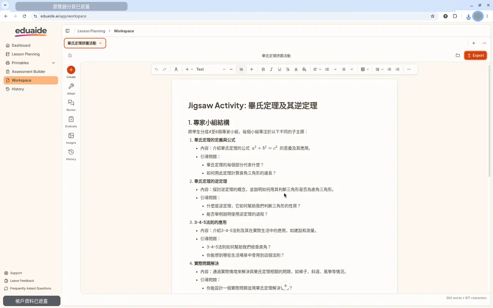
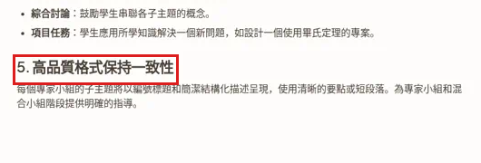
澳門科學館 Oscar 製作 · 2026年10月
Rubrics & Progress Reporting › Analytic Rubric（約 11 秒），Topic 用 p10。輸出 4 × 4 量表，等級：優秀／熟練／發展中／需要改進。
初中任務分項評分量表：運用畢氏定理解決生活問題。評分項目：辨認斜邊及列式、計算準確度、檢查合理性及單位、數學表達。分四個等級。
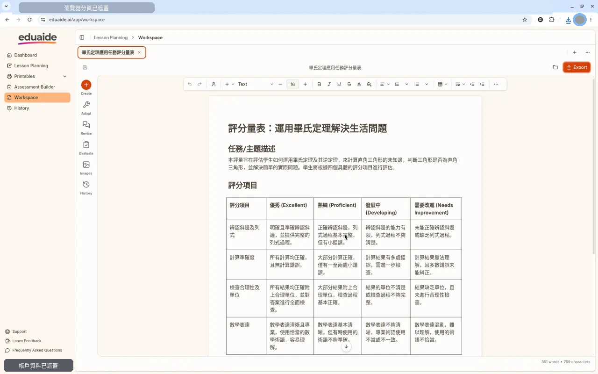
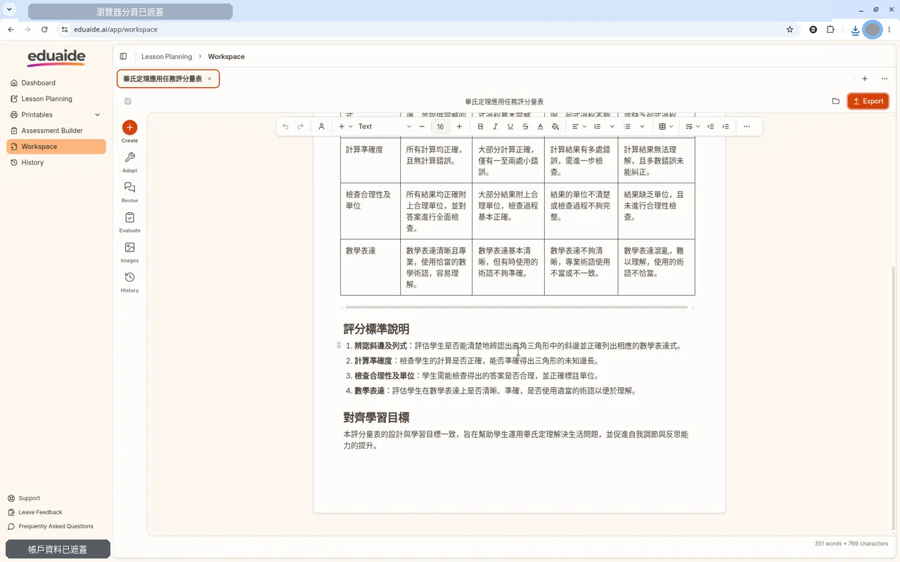
澳門科學館 Oscar 製作 · 2026年10月
Communication & Classroom Culture › Draft Email（約 7 秒）。這個工具沒有 Learning Objective 欄，只有 Topic（p23）。
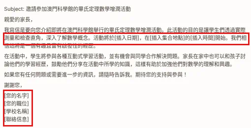
澳門科學館 Oscar 製作 · 2026年10月
Direct Instruction › Demonstration（約 11 秒），Topic 用 p07（12 等份繩圈拉成 3-4-5 三角形）。
畢氏定理逆定理的「預測—觀察—解釋」示範：把一條分成 12 等份的繩圈拉成邊長 3、4、5 份的三角形。學生先預測最長邊對面的角是甚麼角，再用三角尺觀察，最後用 3² + 4² = 5² 解釋。
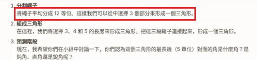
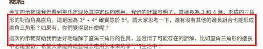
澳門科學館 Oscar 製作 · 2026年10月
以下是 2026年10月7日 帳戶內的完整清單；標「✓ 已示範」的可按連結跳到示範頁。免費有限制全部工具都扣點數
| 工具（介面名稱） | 中文名 | 一句說明 |
|---|---|---|
| Montessori Lesson Plan | 蒙特梭利教案 | 一次產生三份以動手操作為主的教案，附材料及教師準備 |
| 5 E's Lesson Plan ✓ 已示範 | 5E 探究式教案 | Engage／Explore／Explain／Elaborate／Evaluate 五階段 |
| Backward Design (UbD) Organizer | 逆向設計組織表 | 先定目標及真實評估，再設計學習活動 |
| Gagné's Nine Events of Instruction | 加涅九大教學事件 | 按九個教學事件安排一節課（約 52 分鐘） |
| Hunter's Model - Mastery Learning | 亨特模式（精熟學習） | 8 個環節：引起動機、示範、引導練習、檢查理解、總結等 |
| Lesson Seed | 教案雛形 | 快速構思一節課：目標、直接教學、練習、小組活動及評估 |
| Project Based Learning (PBL) Planner | 專題研習規劃 | 以真實問題驅動、學生主導的專題計劃 |
| SPARK Lesson | SPARK 教案 | Situation、Problem、Aspirations、Result、Kismet 結構，重解難及創意 |
| Student-Centered Approach | 以學生為中心框架 | 強調學生參與、自主及有結構的進程 |
| Unit Plan | 單元計劃 | 跨多節課：直接教學、評估及分散練習 |
| Universal Design for Learning (UDL) Planner | 通用學習設計規劃 | 提供多元參與、呈現及表達方式 |
| 工具（介面名稱） | 中文名 | 一句說明 |
|---|---|---|
| Engagement Activities | 引起興趣活動 | 五個快速活動：思考題、謎語、情境題等 |
| Learning Objective + Success Criteria ✓ 已示範 | 學習目標＋成功準則 | 按 Marzano 分類寫目標、成功準則及評估措施 |
| Anchor Chart Outline | 重點海報大綱 | 最多五個類別的課室重點海報內容 |
| Assessment Measures | 評估方法 | 建議進展性及總結性評估工具 |
| Bloom's Taxonomy Ladder | 布魯姆分類階梯 | 按六個思維層次由淺入深排列的問題 |
| Differentiated Instruction Assistant | 差異化教學助手 | 按不同程度調整內容、過程或成品的建議 |
| Evidence Statements | 證據陳述 | 各認知層次「學會了」的可觀察表現 |
| Interleaved Practice | 交錯練習 | 把不同題型混合的練習 |
| Marzano's Taxonomy Ladder | 馬沙諾分類階梯 | 按 Marzano 思維層次排列的任務 |
| Prior Knowledge + Scaffolding | 已有知識＋鷹架 | 列出前備知識及支援策略 |
| Retrieval Practice Calendar | 提取練習時間表 | 安排一段時間內的溫習小測 |
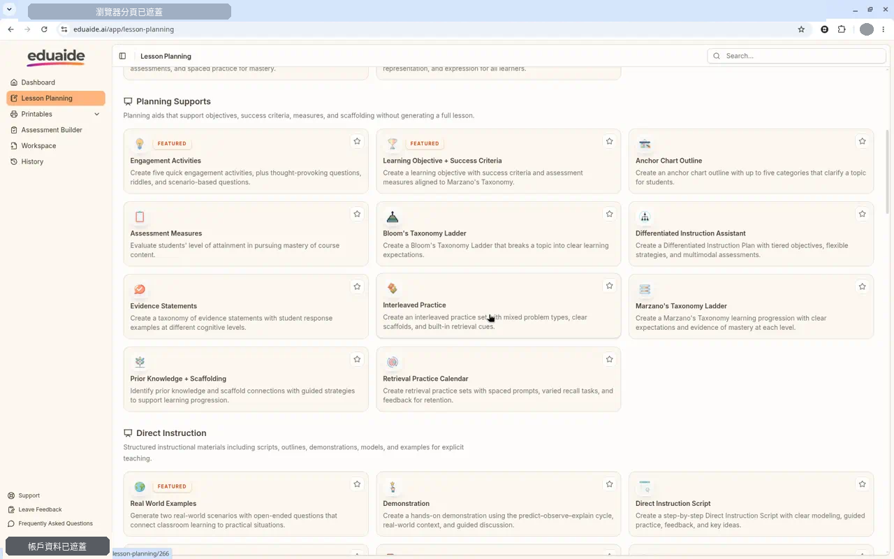
澳門科學館 Oscar 製作 · 2026年10月
以下是 2026年10月7日 帳戶內的完整清單；標「✓ 已示範」的可按連結跳到示範頁。免費有限制全部工具都扣點數
| 工具（介面名稱） | 中文名 | 一句說明 |
|---|---|---|
| Real World Examples | 生活實例 | 把概念連繫真實生活的例子 |
| Demonstration ✓ 已示範 | 示範（預測—觀察—解釋） | 學生先預測、再觀察、後解釋 |
| Direct Instruction Script | 直接教學講稿 | I Do／We Do／You Do 逐步講稿，含理解檢查 |
| Elaborated Analogy | 延伸類比 | 用熟悉事物作詳細類比，並說明類比的限制 |
| Example-Problem | 示例＋配對練習 | 示例與練習配對，逐步撤走提示 |
| Slides Outline | 簡報大綱 | 只是文字大綱，不會產生簡報檔 |
| Worked Example ✓ 已示範 | 解題示例 | 逐步展示完整解法及理由 |
| 工具（介面名稱） | 中文名 | 一句說明 |
|---|---|---|
| Choice Board Assignments ✓ 已示範 | 選擇板作業 | 列出多項任務讓學生自選 |
| 1 Minute Probes / Bell Ringer | 一分鐘探測／課前熱身題 | 課堂開始時的一兩分鐘短題 |
| Close Reading | 精讀 | 分段細讀文本並回答層層深入的問題 |
| Compass Learning Activity | 指南針多角度思考活動 | 從四個方向／角度分析一個議題 |
| Construction Paper Project | 手工紙專題 | 用手工紙製作詞彙或概念作品 |
| Gallery Walk | 畫廊漫步 | 設展示站讓學生輪流觀察及回應 |
| Journal Log | 學習日誌 | 定期記錄學習的日誌提示 |
| Lab + Material List | 實驗＋物資清單 | 約 45 分鐘的實驗步驟及物資 |
| Mock Study | 模擬研究 | 提供模擬數據讓學生分析 |
| Portfolio Assignment Outline | 學習檔案大綱 | 收集及反思作品的要求 |
| Project-Based Assessment (PBA) | 專題式評估 | 以專題成品評估學習 |
| Reflective Journaling | 反思日誌 | 引導反思的寫作提示 |
| Research Project | 研究專題 | 研究問題、步驟及成果要求 |
| Scenario Assignment | 情境作業 | 把知識應用到一個真實情境 |
| Self-Assessment | 自評 | 學生按準則評估自己的表現 |
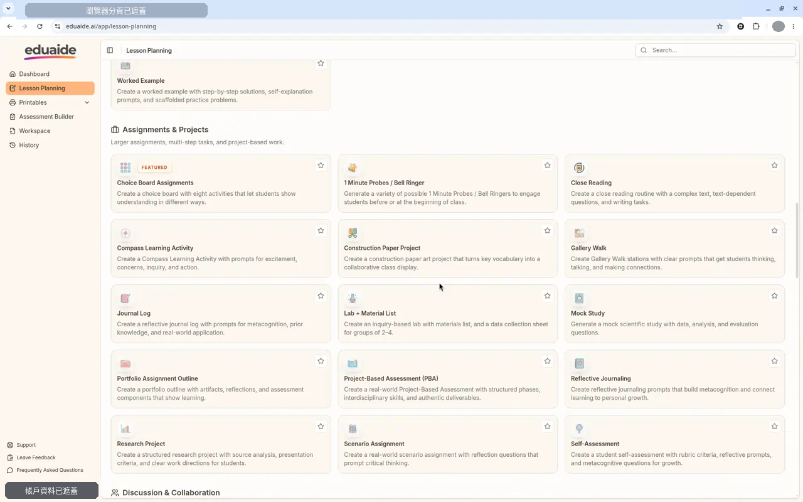
澳門科學館 Oscar 製作 · 2026年10月
以下是 2026年10月7日 帳戶內的完整清單；標「✓ 已示範」的可按連結跳到示範頁。免費有限制全部工具都扣點數
| 工具（介面名稱） | 中文名 | 一句說明 |
|---|---|---|
| Jigsaw Activity ✓ 已示範 | 拼圖法 | 專家組學一部分，再回原組互教 |
| Concentric Circles Discussion | 內外圈討論 | 學生分內外兩圈，輪換配對討論 |
| Conversation Practice | 對話練習 | 第二語言對話練習情境 |
| Debate | 辯論 | 正反雙方論點及辯論流程 |
| Discussion Prompts | 討論題 | 三條開放式討論題 |
| Inquiry-Based Model | 探究式模型 | 以探究問題及實物模型學習 |
| Kagan List | 卡根合作學習結構 | Kagan 合作學習結構建議 |
| Learning Stations | 學習站 | 分站輪流完成不同任務 |
| Round Robin | 輪流發言 | 小組內按次序輪流分享 |
| Skit Dialogue | 短劇對白 | 把概念寫成短劇對白 |
| Socratic Seminar | 蘇格拉底研討 | 字面、詮釋、評鑑三層問題的討論 |
| Team Based Activity | 小組分工活動 | 2–4 人分角色合作完成任務 |
| Think-Pair-Share | 思考—配對—分享 | 先獨立思考，再與同伴討論，後向全班分享 |
| 工具（介面名稱） | 中文名 | 一句說明 |
|---|---|---|
| Exit Slip ✓ 已示範 | 離堂小測 | 下課前檢查今天學會了沒有 |
| Metacognitive Questions | 後設認知題 | 五條反思自己學習的問題 |
| Class Poll | 課堂投票 | 快速了解全班想法 |
| Deep Question | 深度問題 | 一條需要深入思考的問題 |
| Fill In The Blank Questions | 填充題 | 句子留空讓學生填寫 |
| Matching Questions | 配對題 | 把兩欄項目配對 |
| Multi-Part Question (MPQ) | 多部分題 | 一道大題分幾個相連小題 |
| Multi-Select Questions | 多選題（選出所有正確答案） | 三條，正確答案可能多於一個 |
| Multiple Choice Questions ✓ 已示範 | 選擇題 | 五條，附答案 |
| Scenario-Based Questions | 情境題 | 把題目放在真實情境中 |
| Source Analysis Questions | 資料分析題 | 根據史料或資料作答 |
| Tiered Questions | 分層提問 | 由淺入深的分層問題 |
| True/False Questions | 是非題 | 判斷句子對或錯 |
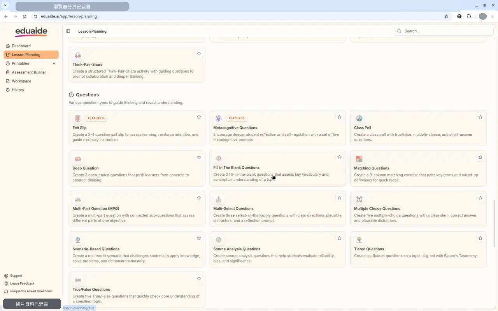
澳門科學館 Oscar 製作 · 2026年10月
以下是 2026年10月7日 帳戶內的完整清單；標「✓ 已示範」的可按連結跳到示範頁。免費有限制全部工具都扣點數
| 工具（介面名稱） | 中文名 | 一句說明 |
|---|---|---|
| Analytic Rubric ✓ 已示範 | 分項評分量表 | 按多個項目分別評分 |
| Developmental Rubric | 發展性評分量表 | Emerging → Developing → Proficient → Advanced |
| Features Matrix | 特徵矩陣 | 用表格比較多個項目的特徵 |
| Holistic Rubric | 整體評分量表 | 只給一個整體等級 |
| Single-Point Rubric | 單點評分量表 | 只寫達標描述，兩旁寫優點及改進 |
| 工具（介面名稱） | 中文名 | 一句說明 |
|---|---|---|
| Accommodations List | 調適措施清單 | 不改目標，只調整學習或評估方式 |
| Action Steps | 行動步驟 | 把目標拆成具體步驟 |
| Behavioral Intervention Plan (BIP) Outline | 行為介入計劃大綱 | 針對學生行為的支援計劃 |
| Class Announcement | 班務通告 | 向學生或家長發出的通告 |
| Class Newsletter | 班級通訊 | 定期的班級消息 |
| Draft Email ✓ 已示範 | 草擬電郵 | 產生電郵文字（不會代發） |
| ESOL Assessment Outline | ESOL 評估大綱 | 評估英語作附加語言學生的能力 |
| Icebreaker Activities | 破冰活動 | 新班或新組的熱身活動 |
| Letter of Recommendation | 推薦信 | 為學生撰寫推薦信 |
| Restorative Circle | 修復式圓圈 | 處理衝突、修復關係的圓圈對話 |
| S.M.A.R.T. Goal Outline | SMART 目標大綱 | 具體、可量度、可達到、相關、有時限的目標 |
| Social-Emotional Learning (SEL) Integrator | 社交情緒學習整合 | 把 SEL（CASEL 五項能力）融入課堂 |
| Syllabus Starter | 課程大綱起稿 | 學期課程大綱初稿 |
| Team Building Activity | 團隊建立活動 | 建立合作關係的活動 |
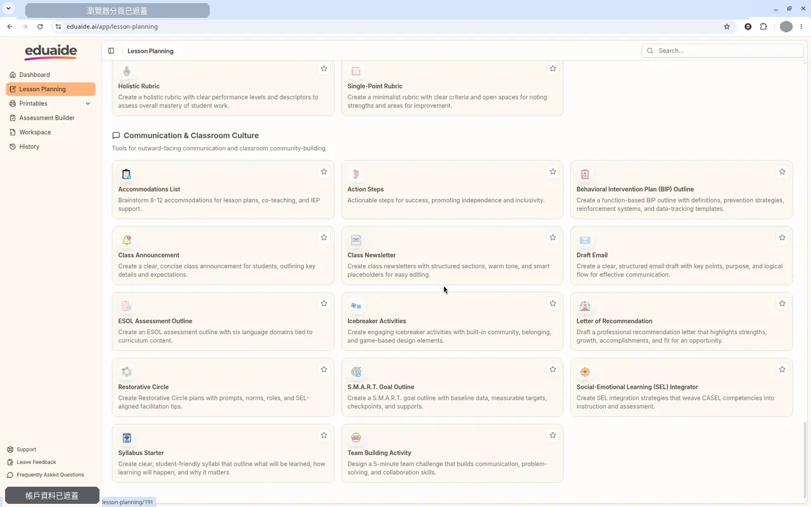
澳門科學館 Oscar 製作 · 2026年10月
左側欄 Printables 有三個分頁：Worksheets（14）、Organizers（9）、Games（12），共 35 個可列印資源。表單與 Lesson Planning 相同，生成後在 Workspace 開啟，可編輯及匯出。
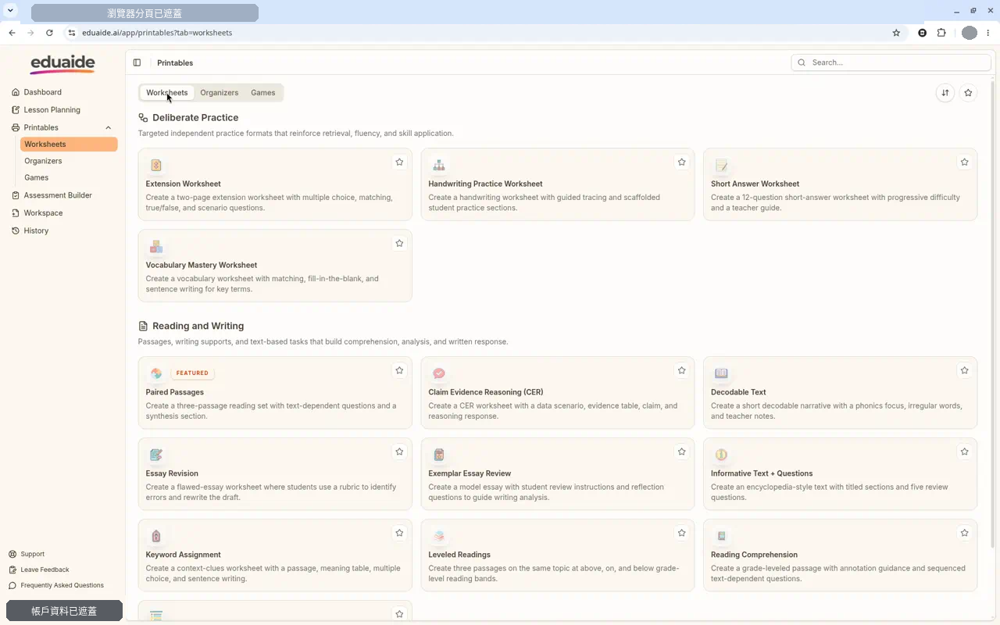
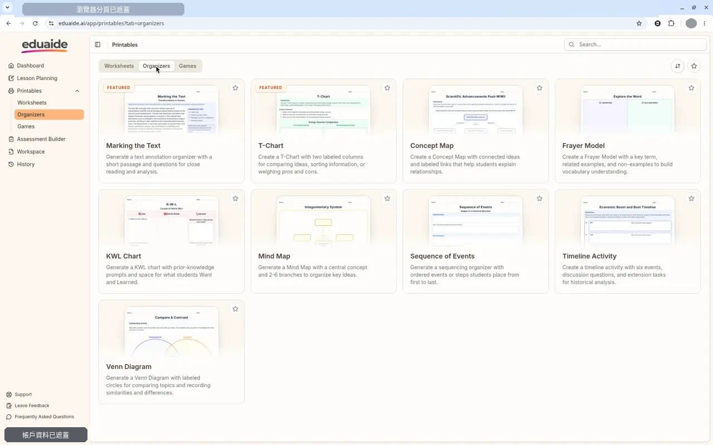
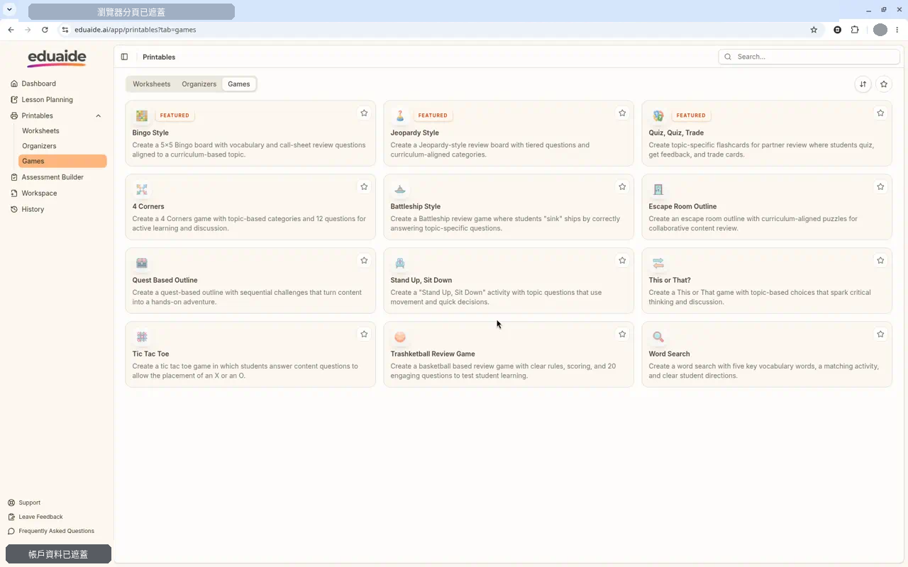
澳門科學館 Oscar 製作 · 2026年10月
2026年10月7日 帳戶內的完整清單。免費有限制全部扣點數
| 工具（介面名稱） | 中文名 | 一句說明 |
|---|---|---|
| Extension Worksheet | 延伸工作紙 | 為已掌握基礎的學生提供進階練習 |
| Handwriting Practice Worksheet | 書寫練習工作紙 | 字母／字詞描寫練習（主要適用英文） |
| Short Answer Worksheet | 短答題工作紙 | 一組短答題，附作答空間 |
| Vocabulary Mastery Worksheet | 詞彙精熟工作紙 | 詞彙定義、例句及練習 |
| Paired Passages | 配對篇章 | 兩篇相關文章及比較題 |
| Claim Evidence Reasoning (CER) ✓ 已示範 | 主張—證據—推理 | 用數據及證據支持結論 |
| Decodable Text | 可解碼文本 | 控制拼讀規律的初階閱讀文本（英文） |
| Essay Revision | 文章修訂 | 引導學生修改自己文章的清單 |
| Exemplar Essay Review | 範文分析 | 分析一篇範文的優點 |
| Informative Text + Questions | 說明文＋問題 | 一篇說明文及理解題 |
| Keyword Assignment | 關鍵詞作業 | 圍繞關鍵詞的練習 |
| Leveled Readings | 分級閱讀 | 同一內容的不同閱讀程度版本 |
| Reading Comprehension | 閱讀理解 | 文章及理解題 |
| Student Notes Outline | 學生筆記大綱 | 留空讓學生上課時填寫的筆記 |
| 工具（介面名稱） | 中文名 | 一句說明 |
|---|---|---|
| Marking the Text | 文本標記 | 教學生在文本上圈劃重點的指引 |
| T-Chart | T 字表 | 兩欄比較 |
| Concept Map | 概念圖 | 概念之間的連繫 |
| Frayer Model ✓ 已示範 | 弗雷爾模型（四格詞彙圖） | 定義、例句、例子、非例子 |
| KWL Chart | KWL 表 | 已知（Know）／想知（Want）／學到（Learned） |
| Mind Map | 腦圖 | 由中心概念向外延伸 |
| Sequence of Events | 事件順序圖 | 按次序排列步驟或事件 |
| Timeline Activity | 時間線活動 | 把事件放在時間線上 |
| Venn Diagram | 溫氏圖 | 比較兩者的異同 |
| 工具（介面名稱） | 中文名 | 一句說明 |
|---|---|---|
| Bingo Style | 賓果遊戲 | 按提示在格子上找答案 |
| Jeopardy Style ✓ 已示範 | Jeopardy 搶答遊戲 | 5 類別 × 5 分值的問答板 |
| Quiz, Quiz, Trade | 問、問、交換 | 兩人互問卡片後交換再找新同伴 |
| 4 Corners | 四角落 | 按答案走到課室四角之一 |
| Battleship Style | 戰艦遊戲 | 答對才可「開炮」的格子遊戲 |
| Escape Room Outline ✓ 已示範 | 密室逃脫大綱 | 解謎得密碼的遊戲大綱 |
| Quest Based Outline | 任務冒險大綱 | 以闖關任務包裝的學習 |
| Stand Up, Sit Down | 站立／坐下 | 按對錯站起或坐下 |
| This or That? | 二選一 | 在兩個選項中選一個並說明 |
| Tic Tac Toe | 井字遊戲 | 答對才可下子 |
| Trashketball Review Game | 紙團投籃溫習遊戲 | 答對可把紙團投進籃 |
| Word Search | 找字遊戲 | 在字母方格中找詞彙（主要適用英文） |
澳門科學館 Oscar 製作 · 2026年10月
Printables › Worksheets › Claim Evidence Reasoning (CER)，Topic 用 p15（三個三角形 9-12-15、6-7-9、7-24-25）。
用畢氏定理逆定理做「主張—證據—推理」。數據：三個三角形，三邊分別為 (9, 12, 15)、(6, 7, 9)、(7, 24, 25)。學生判斷哪些是直角三角形，計算 a² + b² 和 c² 作證據，再解釋推理。
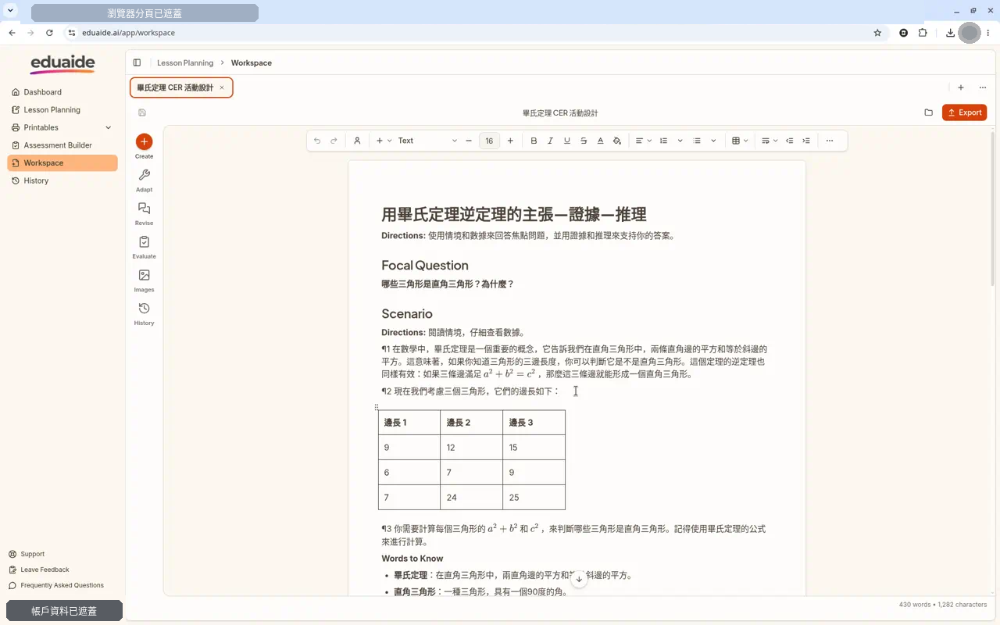
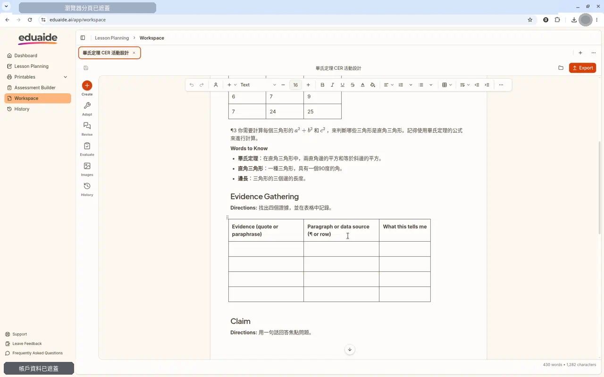
數據本身正確：9² + 12² = 81 + 144 = 225 = 15²（直角）；6² + 7² = 36 + 49 = 85 ≠ 81 = 9²（不是直角）；7² + 24² = 49 + 576 = 625 = 25²（直角）。但：
澳門科學館 Oscar 製作 · 2026年10月
Printables › Organizers › Frayer Model（約 3.9 秒），Topic 用 p12（「斜邊」）。結果是固定的四格版面：DEFINITION／IN A SENTENCE／EXAMPLES／NON-EXAMPLES，中間是詞語「斜邊」。
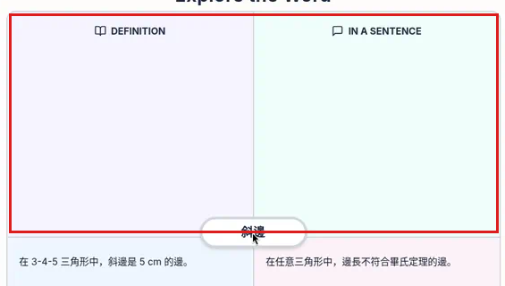
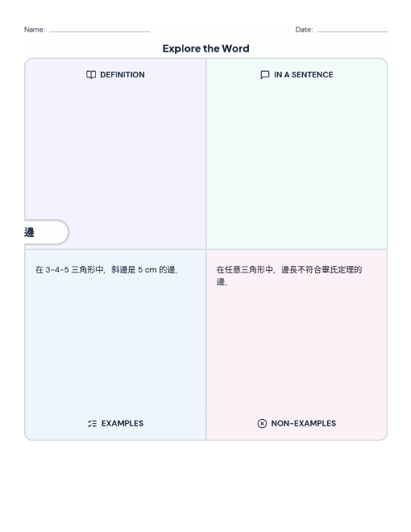
澳門科學館 Oscar 製作 · 2026年10月
Printables › Games › Jeopardy Style（約 20 秒），Topic 用 p13。輸出 5 × 5 問答板及每題答案。
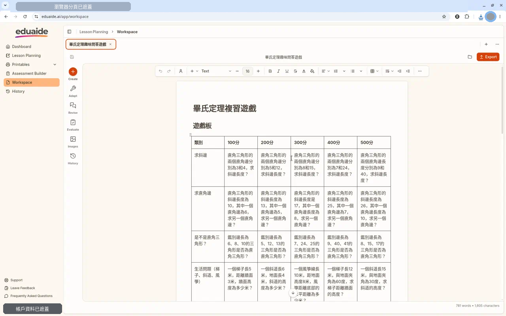
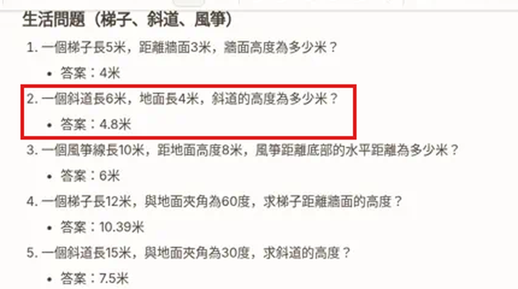
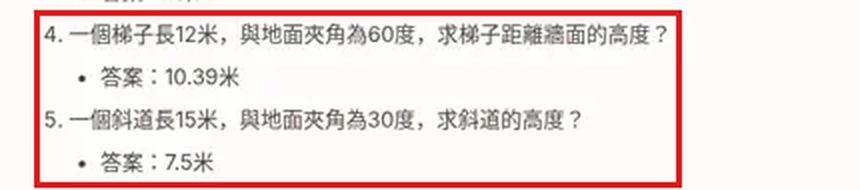
澳門科學館 Oscar 製作 · 2026年10月
Printables › Games › Escape Room Outline（約 16 秒），Topic 用 p14。標題「畢氏定理密室逃脫大綱（科學館的挑戰）」，4 個謎題。
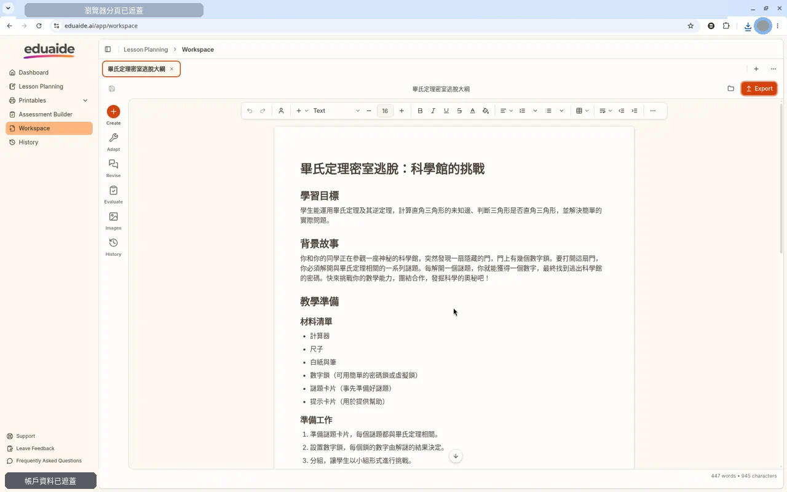
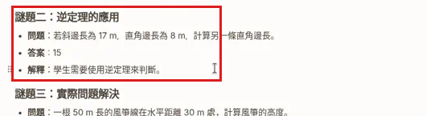
澳門科學館 Oscar 製作 · 2026年10月
左側欄 Assessment Builder（Dashboard 卡片標 NEW、9 種題型）。先選範本，或按 Create Custom Assessment 自訂。
| 範本（介面名稱） | 中文 | 預設分部／題數 |
|---|---|---|
| Multiple-Choice Quiz | 選擇題小測 | 1 部分／10 題 |
| True/False Quick Check | 是非題快速檢查 | 2／8 |
| Vocabulary & Concepts Practice | 詞彙及概念練習 | 2／10 |
| Mixed-Format Knowledge Check | 混合題型知識檢查 | 4／20 |
| Scenario-Based Application Quiz | 情境應用小測 | 3／15 |
| Constructed Response Assessment | 建構式作答評估 | 2／7 |
| Comprehensive Unit Test / Exam | 單元測驗／考試 | 5／35 |
澳門科學館 Oscar 製作 · 2026年10月
Configure Assessment 分三步：Step 1 班級資料（Grade、Objective、Standards）→ Step 2 加題目部分 → Step 3 檢查摘要後 Generate。
| 題型（介面名稱） | 中文 |
|---|---|
| Multiple Choice | 選擇題 |
| Multi-Select | 多選題 |
| True/False | 是非題 |
| Matching | 配對題 |
| Fill in the Blank | 填充題 |
| Short Answer | 短答題 |
| Scenario-Based | 情境題 |
| Multi-Part | 多部分題 |
| Essay | 論述題 |
| Cognitive Demand 預設 | Easy／Medium／Hard（%） |
|---|---|
| Foundational（基礎） | 60／40／0 |
| Easy-Weighted（偏易） | 60／30／10 |
| Balanced（均衡，預設） | 30／50／20 |
| Challenging（具挑戰） | 10／50／40 |
| Stretch（延伸） | 10／30／60 |
變通：把最重要的要求濃縮進 Objective；或先在 Lesson Planning 的工具（例如 Multiple Choice Questions）連同 .docx 生成題目，再到 Workspace 整理。
澳門科學館 Oscar 製作 · 2026年10月
本示範：A 部 Multiple Choice 6 題 × 1 分（Foundational）、B 部 Scenario-Based 3 題 × 3 分（Balanced）、C 部 Multi-Part 1 題 × 5 分（Challenging）＝ 10 題、20 分、約 20 分鐘。按 Diagnostics 看「Assessment Overview」（題數上限 40、難度分佈、題型、對應目標），再按 Generate（約 11 秒）。
澳門科學館 Oscar 製作 · 2026年10月
評估生成後在 Workspace 開啟，按右上角 Export：Copy to Clipboard、PDF、Word Document、Connect Google Drive。
澳門科學館 Oscar 製作 · 2026年10月
左側欄 Workspace（工作區）是編輯、改寫及匯出所有文件的地方。開始畫面有四個入口：
| 入口／工具列 | 中文 | 用途 |
|---|---|---|
| Create Resource | 建立資源 | 跳到 Lesson Planning 選工具 |
| Blank Document | 空白文件 | 從零開始寫或貼上內容 |
| Import DOCX | 匯入 Word 檔 | 上載 .docx 繼續編輯（下頁） |
| Recent Generations | 最近生成 | 打開之前的結果 |
| 左側工具列：Create／Adapt／Revise／Evaluate／Images／History | 建立／調適／修訂／評估／圖片／記錄 | 以下各頁逐一示範 |
澳門科學館 Oscar 製作 · 2026年10月
在 Workspace 開始畫面按 Import DOCX（「Upload a Word document to continue working on it.」），選擇 畢氏定理教學短文.docx。內容（標題、段落、公式文字）完整匯入，在新分頁開啟。
畢氏定理 在直角三角形中，直角所對的邊叫做斜邊，它一定是最長的邊；另外兩條邊叫做直角邊。 畢氏定理：如果直角三角形的兩條直角邊是 a 和 b，斜邊是 c，那麼 a² + b² = c²。 例一（求斜邊）：兩條直角邊分別是 3 cm 和 4 cm。c² = 3² + 4² = 9 + 16 = 25，所以 c = √25 = 5 cm。 例二（求直角邊）：一把 5 m 長的梯子斜靠在牆上，梯腳離牆 1.4 m。梯子是斜邊，所以要用減法：h² = 5² − 1.4² = 25 − 1.96 = 23.04，h = √23.04 = 4.8 m。 逆定理：如果三角形的三邊滿足 a² + b² = c²（c 是最長邊），那麼這個三角形是直角三角形。例如 9² + 12² = 81 + 144 = 225 = 15²，所以三邊為 9、12、15 的三角形是直角三角形；但 6² + 7² = 85，不等於 9² = 81，所以三邊為 6、7、9 的三角形不是直角三角形。 生活應用：想檢查一個角是不是直角，可以在一邊量 3 m、另一邊量 4 m，如果兩個記號剛好相距 5 m，那個角就是直角。 記得檢查答案：斜邊一定是最長的邊，直角邊不可能比斜邊長。
澳門科學館 Oscar 製作 · 2026年10月
文件上方的工具列：Undo／Redo、Toggle Name/Date（在頂部加入「Name：＿＿ Date：＿＿」）、Insert、Styles、字號、粗體／斜體／底線／刪除線、文字及背景顏色、對齊、清單、Table、行距、縮排；右下角顯示字數。
| Insert 項目 | 中文 |
|---|---|
| Paragraph／Heading 1–3 | 段落／標題 1–3 |
| Table | 表格 |
| Code／Quote／Divider | 程式碼／引文／分隔線 |
| Bulleted／Numbered list | 項目／編號清單 |
| 2／3／4 Columns | 分 2／3／4 欄 |
| Equation／Inline Equation | 公式（獨立一行）／行內公式（KaTeX） |
c=\sqrt{{a^2+b^2}} 可得到正式數學公式。澳門科學館 Oscar 製作 · 2026年10月
左側工具列 Adapt 開啟「Differentiate」面板：選一個選項 → 選 Create New Document（開新分頁，原文不變）或 Add To Document（加到原文末尾）→ 選 Fast／Reasoning → 按 Differentiate。
| 類別 | 選項（介面名稱及中文） |
|---|---|
| Questions 題目 | Multiple Choice（選擇題）、Open Ended（開放式問題）、Discussion（討論題）、Essential Question（核心問題）、Check Understanding（理解檢查題）、Exit Ticket（離堂小測）、Higher Order Questions（高階思維題） |
| Engagement & Extension 參與及延伸 | Hook Activity Pack（引入活動包）、Discussion Protocol Pack（討論流程包）、Enrichment Pack（增潤活動包） |
| Learner Profiles 學習者類型 | Gifted / Enrichment（資優／增潤）、Absent Student Catch-Up（缺課學生追趕）、Reading Support（閱讀支援）、Multilingual Learner（多語學習者（Pre-Teach Vocabulary Pack、WIDA Sentence Frames）） |
| Grading Support 評分支援 | Answer Key（答案）、Single-Point／Analytic／Developmental／Holistic Rubric（單點／分項／發展性／整體評分量表） |
| Complexity 難度調整 | Summarize（摘要）、Chunk Text（分段）、Increase／Decrease Reading Level（提高／降低閱讀程度）、Make Shorter／Longer（縮短／加長）、Sentence Stems（句式提示） |
| Study Skills 學習技巧 | Study Guide（溫習指引）、Keywords（關鍵詞）、Mnemonic Device（記憶口訣）、Flashcards（閃卡）、Vocabulary Rhymes（詞彙押韻）、Cornell Notes Template（康奈爾筆記範本）、Spaced-Repetition Schedule（間隔重溫時間表）、Memory Palace Walkthrough（記憶宮殿導覽） |
| Translate 翻譯 | 27 種語言（包括 Chinese (Simplified)、Chinese (Traditional)、English 等） |
澳門科學館 Oscar 製作 · 2026年10月
以匯入的教學短文為原文（全部用 Create New Document、Fast，各約 5 秒）。
Exit Ticket 節錄（答案 √(100 − 36) = 8 cm）如果你知道一個直角三角形的斜邊長 10 cm，並且一條直角邊長 6 cm，請計算另一條直角邊的長度並解釋你的計算過程。
澳門科學館 Oscar 製作 · 2026年10月
Learner Profiles › Multilingual Learner 再分兩項：Pre-Teach Vocabulary Pack（預先教詞彙）及 WIDA Sentence Frames（Entering／Emerging／Developing／Expanding 四級句式）。本示範用 Pre-Teach Vocabulary Pack → 6 個詞語的表格。
澳門科學館 Oscar 製作 · 2026年10月
Translate › English：把教學短文譯成英文，內容忠實、公式完整。Keywords 用 Add To Document：5 個關鍵詞加到原文末尾（不開新分頁）。
澳門科學館 Oscar 製作 · 2026年10月
左側工具列 Revise 開啟 Erasmus 對話（「Ask me to refine, expand, or explain this document.」）。Erasmus 不會直接改文件：它先顯示 Suggested Edits（綠色＝新增），按 Apply 才寫入（顯示「Applied / Saved to document」），按 Dismiss 則放棄。
1) 在例二加入一個澳門生活例子，所有數字要正確並驗算。 2) 在逆定理段落後加三條理解檢查題，附答案。 3) 把這份文件翻譯成港澳通用的繁體中文，公式保持不變，定理名稱用「畢氏定理」。
澳門科學館 Oscar 製作 · 2026年10月
Eduaide 帳戶內沒有獨立的 Feedback Bot。做法：在 Workspace 開空白文件 → 貼上學生答案（p19）及評分量表（p11）→ Revise › Erasmus 輸入 p20 → 檢查 Suggested Edits → Apply 或 Dismiss（約 12 秒）。
題目：一把 5 m 長的梯子斜靠在垂直的牆上，梯腳離牆 1.4 m。梯頂離地面有多高？ 學生答案： 設梯頂高度為 h。 h² = 5² + 1.4² h² = 25 + 1.96 = 26.96 h = √26.96 ≈ 5.19 所以梯頂離地 5.19 m。
請以初中數學老師的身份，按分項評分量表（p11）為學生答案（p19）寫回饋：每個評分項目給分；引用出錯的那一行；用一兩句十三歲學生聽得懂的話解釋錯誤概念；給一個提示，但不要直接給答案；最後加一句鼓勵的話。
Erasmus 回饋節錄（總分 8／16）1. 辨認斜邊及列式：2 分 …… 梯子 5 m 是斜邊，不是要再拿去相加。
2. 計算準確度（平方、開方、四捨五入）：2 分 …… 前一步公式用錯了，所以後面的開方結果也跟著不對。
3. 檢查答案合理性及單位：1 分 …… 梯頂高度不可能比 5 m 還高。
4. 數學表達：3 分
Erasmus 正確找出錯誤（把平方相加；梯子是斜邊；高度不可能超過 5 m），但評分偏低：
澳門科學館 Oscar 製作 · 2026年10月
左側工具列 Evaluate：「Select one check to run against the current document.」五項檢查，結果分 Slightly／Moderately／Very／Exceedingly Complex 四級；除 Grade Level 外可選 Target Grade（預設 11th Grade）。
| 檢查 | 中文 | 本示範結果（教學短文，8th Grade） |
|---|---|---|
| Grade Level | 年級程度 | Grades 2–3（獨立閱讀）／K-1（有支援）——明顯錯誤 |
| Sentence Structure | 句子結構 | Moderately Complex；百分比自相矛盾 |
| Vocabulary | 詞彙 | Moderately Complex；列出 Tier 2／Tier 3 詞語 |
| Subject Matter Knowledge | 學科知識要求 | Moderately Complex |
| Conventionality | 表達直接程度 | Slightly Complex |
澳門科學館 Oscar 製作 · 2026年10月
只有 Grade Level 結果有 Create Scaffolded Version（「Creates a new document. Original stays unchanged.」）。其他檢查只有 Mark Helpful／Not Helpful／Delete Evaluation。
澳門科學館 Oscar 製作 · 2026年10月
左側工具列 Images 有兩個分頁：Generate（AI 生成）及 Search（搜尋圖庫）。生成：輸入 Image Prompt → 選 Style（Default、Realistic、Cartoon、Diagram、Artistic、Minimalist）→ Generate Image。Diagram 風格約 27 秒，梯子示意圖清晰，可按 Insert 加入文件。
澳門科學館 Oscar 製作 · 2026年10月
文件右上角資料夾圖示 = Save to Class：第一次會顯示「No Classes Yet」→ 按 New Class → 輸入 Class Name（本示範：示範：初中數學）。
| History 行尾選單 | 中文 |
|---|---|
| Open | 打開 |
| Make a Copy | 建立副本 |
| Rename | 重新命名 |
| Save to Class | 存到班別 |
| Delete | 刪除 |
澳門科學館 Oscar 製作 · 2026年10月
按右上角 Export：Copy to Clipboard、PDF、Word Document、Connect Google Drive。Word 匯出正常（.docx 可再編輯）。
澳門科學館 Oscar 製作 · 2026年10月
左側欄底部有三個連結：
| 連結 | 中文 | 說明 |
|---|---|---|
| Leave Feedback | 提交意見 | /app/feedback；類別：Idea（建議）、Issue（問題）、Confusing Experience（操作混亂）、Resource Output（生成內容問題）、Other（其他）。發現 AI 錯誤可選 Resource Output。 |
| Support | 支援 | 連到 eduaide.ai/contact（聯絡表單） |
| Frequently Asked Questions | 常見問題 | eduaide.ai/faq |
澳門科學館 Oscar 製作 · 2026年10月
本次示範共記錄 24 項 AI 錯誤及 10 項功能限制（2026年10月7日 實測）。按「第 N 頁」可跳到該頁看截圖。
| 功能 | 問題 | 正確答案／變通方法 | 截圖 |
|---|---|---|---|
| 功能限制 Standards 資料庫 | 沒有澳門基本學力要求，以美國標準為主 | 把要求原文貼入 Topic，或上載 .docx | 第 16 頁 |
| AI 錯誤 Enhance | 把 164 字元改寫成 26 字元，刪走逆定理、5E 大綱、3-4-5、科學館及澳門情境 | 按 Use This 前檢查；刪走重點就按 ↶ 復原，或不用 Enhance | 第 17 頁 |
| AI 錯誤 5E 教案（Fast） | 一般梯子教案，缺公式、3-4-5 及逆定理；「直邊」、「無需安全注意事項」重複 | 不用 Enhance、改用完整課題重新生成；「直邊」改「直角邊」；補回安全提示 | 第 19 頁 |
| AI 錯誤 5E 教案（Reasoning） | 「長度為 5 單位」的繩標出 3、4、5；標題「2–3 天」與內文節數不符 | 繩長應為 12 單位；按實際節數改標題 | 第 20 頁 |
| AI 錯誤 Learning Objective + Success Criteria | 寫「利用3-4-5法則」檢查直角三角形 | 改為用逆定理比較 a² + b² 與 c² | 第 21 頁 |
| AI 錯誤 Worked Example | 「從斜邊減去直角邊」漏了平方；先假設後驗證；離題的 3(x−1)=15 | 改為「斜邊平方減直角邊平方」；先算後比較；刪除離題延伸 | 第 22 頁 |
| AI 錯誤 Multiple Choice Questions | 4/5 題答案是 A；誘答選項沒有針對指定誤解 | 調亂選項；自行加入針對誤解的誘答選項 | 第 23 頁 |
| AI 錯誤 Exit Slip | 忽略指定題目；第 3 題缺第三邊，無法作答；沒有答案 | 改為「三邊 6、7、9」（85 ≠ 81，不是直角三角形）並自行補答案 | 第 24 頁 |
| AI 錯誤 Choice Board | 任務 1 循環驗證；「視頻」；沒有選擇板規則 | 改用量度驗證；改「影片」；自訂選擇規則 | 第 25 頁 |
| AI 錯誤 Jigsaw Activity | 第 5 節是洩漏的提示文字；沒有提供專家組材料 | 刪除第 5 節；自備材料 | 第 26 頁 |
| AI 錯誤 Analytic Rubric | 描述籠統，沒有針對畢氏定理的典型錯誤 | 參考 p11 自訂量表改寫描述 | 第 27 頁 |
| AI 錯誤 Draft Email | 保留多個 [插入…] 留空位置 | 發出前逐一填好並按學校格式修改 | 第 28 頁 |
| AI 錯誤 Demonstration | 「選擇 3 個部分」、剪刀、把逆定理說成畢氏定理、總結語意不通 | 12 份全用；不剪繩；改稱逆定理；改寫總結 | 第 29 頁 |
| AI 錯誤 CER 工作紙 | 沒有參考答案；沒有標明最長邊 c | 自備答案（9-12-15、7-24-25 是直角；6-7-9 不是）；在表內標明 c | 第 36 頁 |
| AI 錯誤 Frayer Model | 定義、例句兩格空白；非例子含糊 | 自行補上定義、例句及清楚的非例子 | 第 37 頁 |
| 功能限制 Frayer Model 匯出 | 只可匯出 PDF（圖片式），不能匯出 Word | 在 Eduaide 內先填好四格再匯出；或自行用 Word 重做 | 第 37 頁 |
| AI 錯誤 Jeopardy | 斜道 6 m、地面 4 m，答案寫 4.8 m；兩題要用三角比；逆定理類別答案全是「是」 | √(6² − 4²) = √20 ≈ 4.47 m；刪除三角比題；加入 6-7-9 等「否」例子 | 第 38 頁 |
| AI 錯誤 Escape Room | 謎題二標「逆定理」但是一般計算；謎題四沒有數學 | 改標題或換成真正的逆定理題（例如判斷 8-15-17）；重寫謎題四 | 第 39 頁 |
| 功能限制 Assessment Builder | 沒有補充資料欄，只有 Objective（300 字元）＋美國為主的 Standards 資料庫 | 把要求濃縮進 Objective；或改用 Lesson Planning 題目工具並附 .docx | 第 41 頁 |
| AI 錯誤 Assessment Builder 結果 | 情境題沒有情境；C 部標示 Medium；逆定理題循環論證 | 自行改寫情境題；檢查難度標示；改為「比較 a² + b² 與 c²」 | 第 42 頁 |
| 功能限制 評估匯出 | 沒有 Google Forms；沒有學生版；PDF 選項沒有 A–D 字母但答案用字母 | 用 Word 匯出後加字母、刪答案頁；網上測驗需自行在 Google Forms 重建 | 第 43 頁 |
| AI 錯誤 Workspace 空白文件 | 預設的「New Document／This is a blank document…」是真實內容，會被匯出及分析 | 貼上內容前先刪除 | 第 44 頁 |
| AI 錯誤 Adapt（Exit Ticket／降低閱讀程度／Answer Key） | 降低閱讀程度幾乎沒有改；Answer Key 沒有題目 | 自行簡化句子；把答案與題目放在同一文件 | 第 48 頁 |
| 功能限制 Multilingual Learner | Phonetic Support 只有普通話拼音，沒有粵語 | 自行改為粵拼或刪去讀音欄 | 第 49 頁 |
| AI 錯誤 Flashcards | 用「逆畢氏定理」 | 改為「畢氏定理的逆定理」 | 第 49 頁 |
| 功能限制 Add To Document | AI 插入原文後不能 Undo | 先用 Create New Document 或先備份；否則手動刪除 | 第 50 頁 |
| AI 錯誤 Adapt 分頁標題 | 「退出票」、「答案鑑定」等機器翻譯標題 | 在 History 用 Rename 改為「離堂小測」、「答案」 | 第 50 頁 |
| AI 錯誤 Erasmus 學生回饋 | 第 2 項計算準確度給 2 分（應 3–4）；第 3 項給 1 分（應 2） | 按量表調整分數；正確答案 h = √(25 − 1.96) = 4.8 m | 第 52 頁 |
| AI 錯誤 Evaluate | Grade Level 判為 Grades 2–3／K-1；句子結構百分比自相矛盾 | 只作參考，以教師判斷為準 | 第 53 頁 |
| 功能限制 Evaluate | 一次只能做一項檢查；Free 不能一鍵修改 | 逐項執行；修改用 Erasmus（Pro）或手動 | 第 53 頁 |
| AI 錯誤 Create Scaffolded Version | 圖片無法顯示；√23.04 寫成「≈ 4.8」 | 刪除破圖或用 Images 補圖；改為 √23.04 = 4.8 m | 第 54 頁 |
| 功能限制 Images | Image Prompt 上限 250 字元，長提示被截斷 | 精簡提示，重要要求放前面 | 第 55 頁 |
| 功能限制 PDF 匯出 | PDF 是圖片式，不能選取／搜尋文字 | 改用 Word Document 匯出，再自行轉 PDF | 第 57 頁 |
| 功能限制 Export | 沒有 Google Docs／Forms 選項（Drive 連接未測試） | 匯出 Word 後上載到 Google Drive | 第 57 頁 |
澳門科學館 Oscar 製作 · 2026年10月
以下檔案供教師試用或核對。
| 檔案 | 內容 | 類別 | 備註 |
|---|---|---|---|
| macau_BAA_pythagoras_excerpt.docx | 澳門基本學力要求節錄（B——2——9／11／12 等原文） | 輸入 | 示範時上載到 File |
| pythagoras-teaching-text.docx | 畢氏定理教學短文（Import DOCX 示範用） | 輸入 | Workspace › Import DOCX |
| eduaide-demo-texts.docx | 全部示範提示文字（p01–p23，中英對照） | 輸入 | 與本教程的複製框內容相同 |
| eduaide-5e-reasoning.docx | 5E 教案（Reasoning，沒有 Enhance） | AI 輸出 | 錯誤：繩長、天數 |
| eduaide-5e-fast.docx | 5E 教案（Fast＋Enhance） | AI 輸出 | 錯誤：缺逆定理、用語 |
| eduaide-assessment.docx | 畢氏定理應用評估（Assessment Builder） | AI 輸出 | 錯誤：情境題、難度標示 |
| eduaide-assessment.pdf | 同上，Eduaide 原始 PDF 匯出 | AI 輸出 | 圖片式 PDF；選項沒有 A–D |
| eduaide-jeopardy.docx | Jeopardy 搶答遊戲 | AI 輸出 | 錯誤：4.8 m 應為 √20 ≈ 4.47 m |
| eduaide-erasmus-feedback.docx | Erasmus 學生答案回饋 | AI 輸出 | 錯誤：第 2、3 項評分偏低 |
| eduaide-analytic-rubric.docx | 分項評分量表 | AI 輸出 | 描述籠統 |
| eduaide-cer-worksheet.docx | CER 工作紙 | AI 輸出 | 沒有答案 |
| eduaide-escape-room.docx | 密室逃脫大綱 | AI 輸出 | 錯誤：謎題二、四 |
| eduaide-frayer-model.pdf | Frayer Model（Eduaide 原始 PDF 匯出） | AI 輸出 | 兩格空白；只可匯出 PDF |
澳門科學館 Oscar 製作 · 2026年10月
澳門科學館 Oscar 製作 · 2026年10月
澳門科學館 Oscar 製作 · 2026年10月
澳門科學館 Oscar 製作 · 2026年10月
澳門科學館 Oscar 製作 · 2026年10月